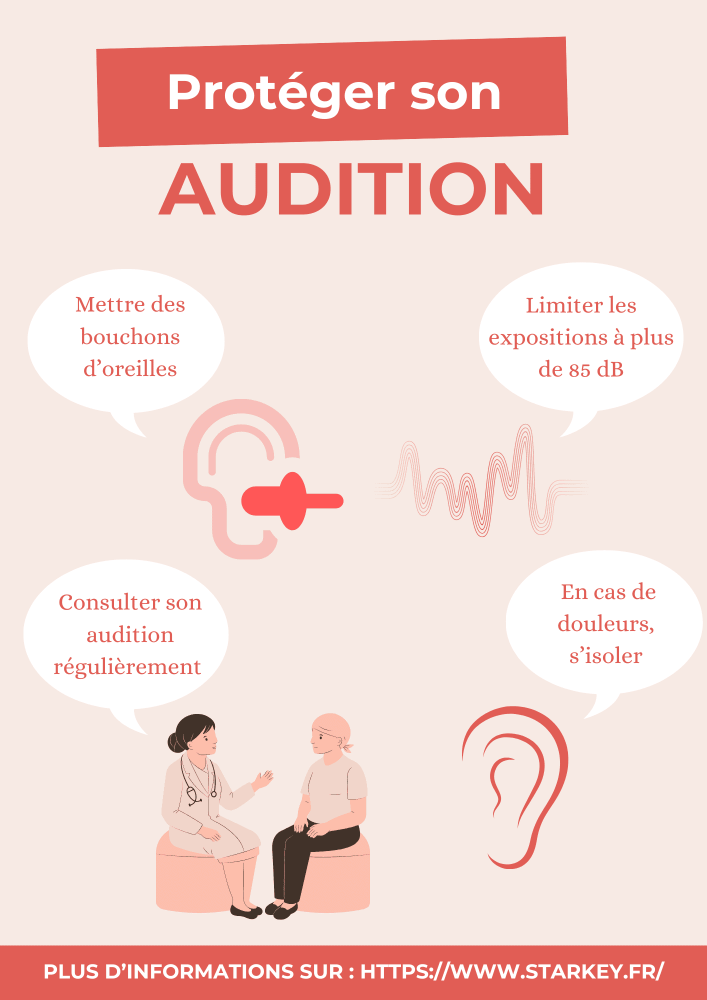
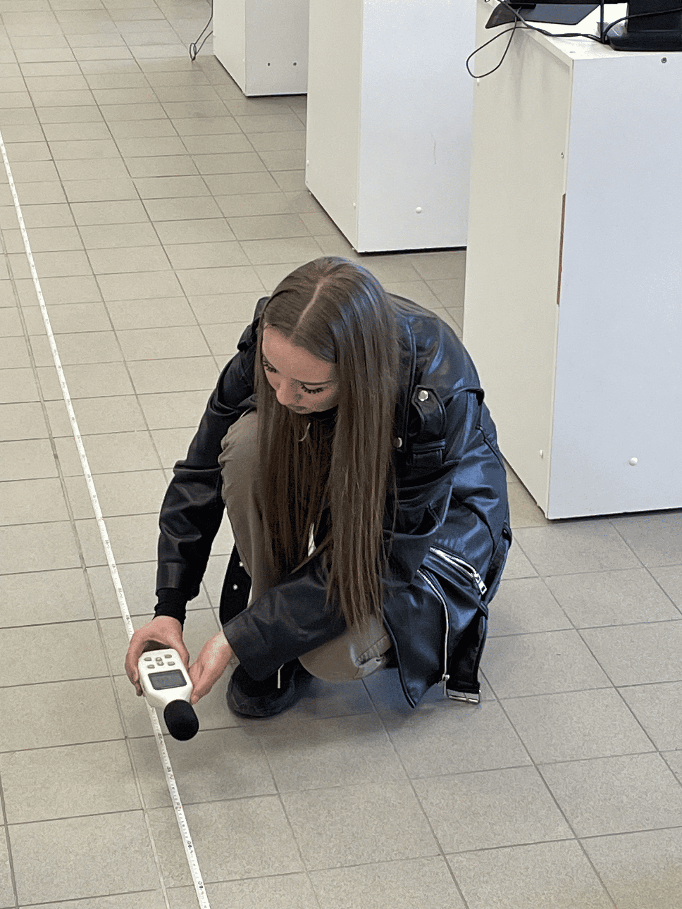
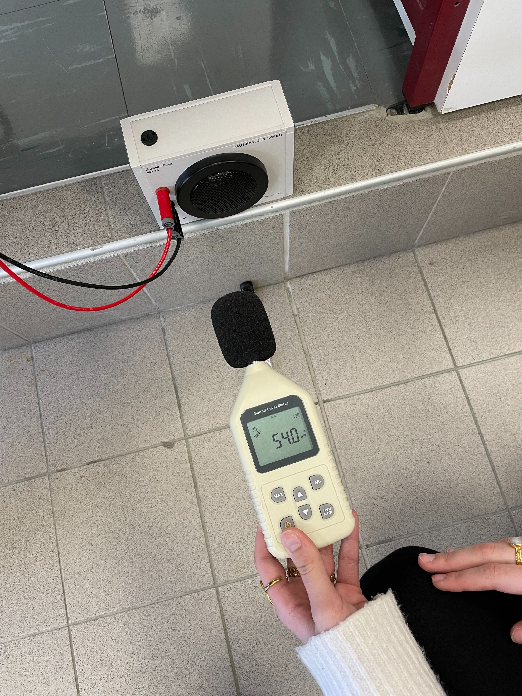
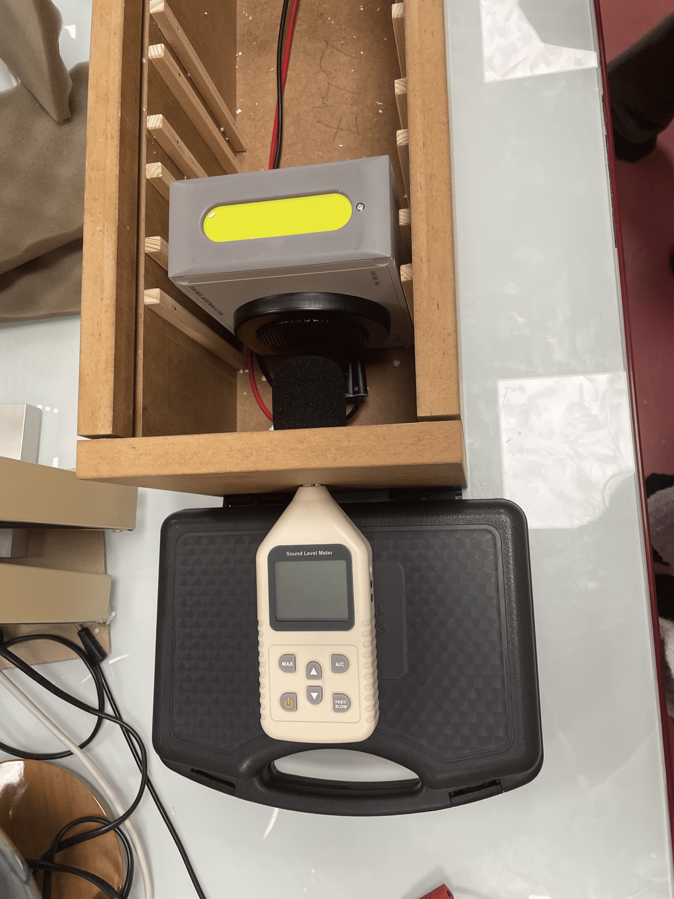

Prévention auditive : protéger son oreille
Affiche, expériences et sensibilisation
Présentation du projet
Lors de ce projet, j’ai réalisé une présentation sur la prévention de l’audition dans le but de sensibiliser et transmettre un message important de manière claire et accessible.
J’ai conçu une affiche pour appuyer visuellement les informations et rendre la communication plus efficace. J’ai également mis en place une expérience afin d’illustrer concrètement mon sujet,
ce qui m’a permis de développer une démarche rigoureuse, organisée et dynamique.
Ce travail montre ma capacité à préparer un projet, à m’exprimer à l’oral, à créer des supports, à m’adapter à un public et à travailler avec sérieux pour faire passer un message utile.



